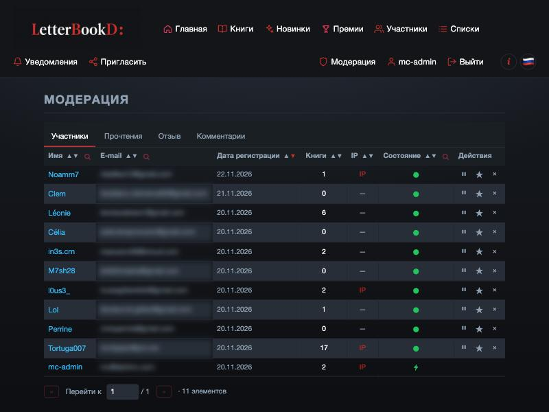

Модерация — Участники Только для админов
Зачем это нужно: Режим администратора. Обзор всех аккаунтов клуба: кто активен, кто админ, кого отметили по IP-адресу, и действия для приостановки, назначения админом или удаления участника. E-mail в этой документации размыты; в приложении они видны открыто.

Как это устроено
Четыре вкладки вверху: Участники (здесь), Чтения, Отзывы, Комментарии. Таблица участников показывает для каждого аккаунта: Имя (ник, кликабельный, ведёт на профиль), E-mail (открытым текстом в приложении), Зарегистрирован (дата), Книги (число чтений), IP (красный бейдж «IP», если зафиксирован подозрительный IP-адрес, иначе прочерк), Статус (зелёная точка означает активного участника, зелёная молния админа). В колонке «Действия» в каждой строке три значка: пауза (приостановить), звезда (выдать или забрать права админа), крестик (удалить). Каждая колонка сортируется (▲▼) и фильтруется через значок лупы, который открывает окно фильтра.
Цепочки действий
Каждая строка — это триггер в интерфейсе, модалка или форма, которые он открывает, и результат.
| Триггер | Модалка / Поля | Эффект |
|---|---|---|
| Вкладки Участники / Чтения / Отзывы / Комментарии | Навигация через ?tab=… | Переключает раздел модерации. |
| Стрелки ▲▼ в заголовке колонки | — | Сортирует колонку по возрастанию (▲) или убыванию (▼). Сортировка запоминается в адресе страницы. |
| Значок лупы в заголовке колонки (открывает окно «Фильтр») | Окно с текстовым полем «Фильтровать — <колонка>» и кнопками «Применить» / «Очистить» / «Отмена». | Фильтрует таблицу по выбранной колонке. «Очистить» снимает фильтр. Фильтры по нескольким колонкам можно накладывать одновременно. |
| Кнопка паузы (||) в строке участника | Подтверждающая POST-форма. | Приостанавливает аккаунт: участник больше не может войти и публиковать. Вернуть его можно позже той же кнопкой. |
| Кнопка звезды (☆/★) в строке участника | POST-форма. | Выдаёт или забирает права админа (is_staff и is_superuser). Зелёная молния в колонке «Статус» меняется сразу. Если админ снимет права сам с себя, он потеряет доступ к модерации. |
| Кнопка крестика (×) в строке участника | Подтверждающая POST-форма. | Удаляет аккаунт навсегда вместе со всеми данными (чтения, отзывы, комментарии, списки, приглашения). Необратимо. |
| Низ таблицы: «Перейти к [n] / X» и стрелки | Простая пагинация. | Переход между страницами результатов. |